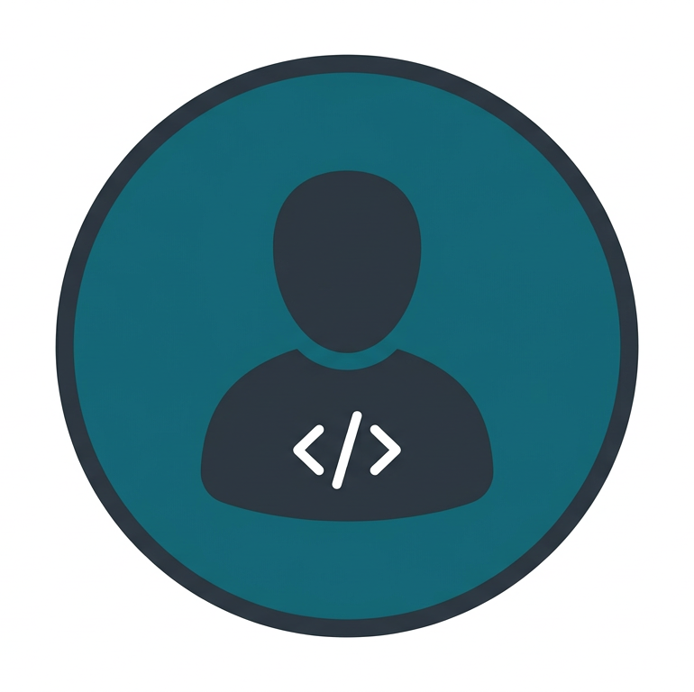
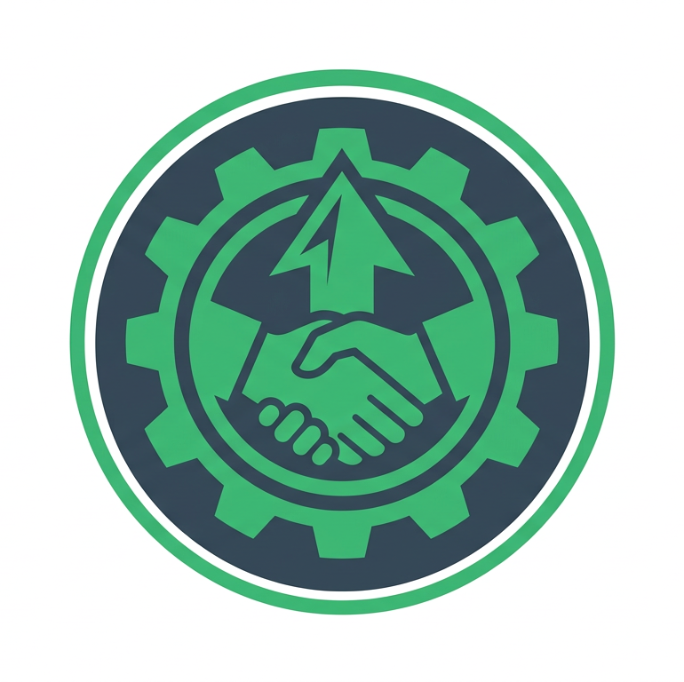
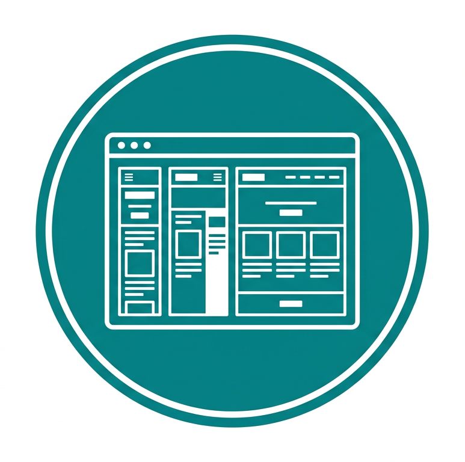
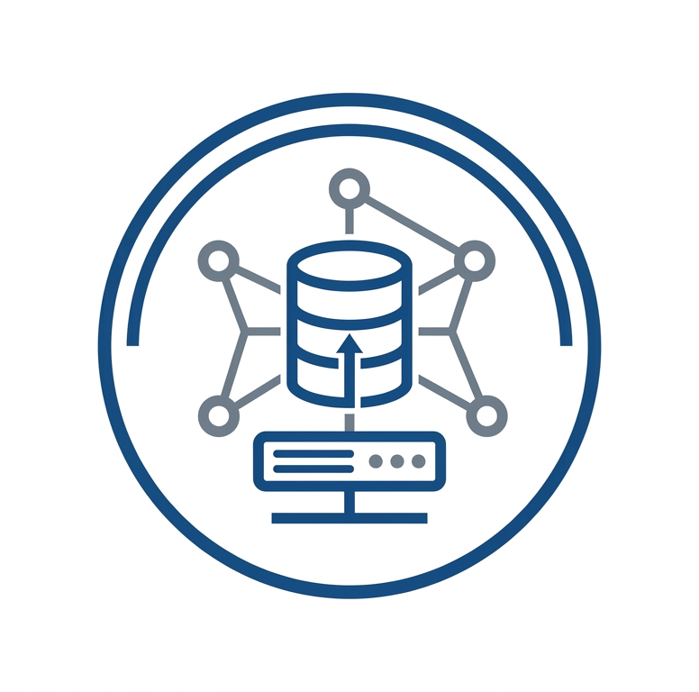
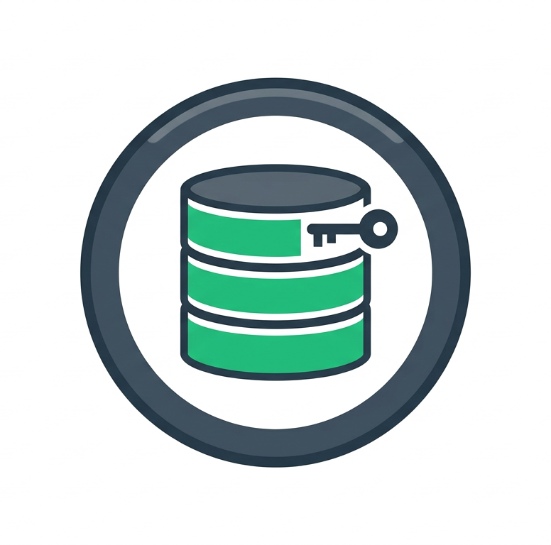
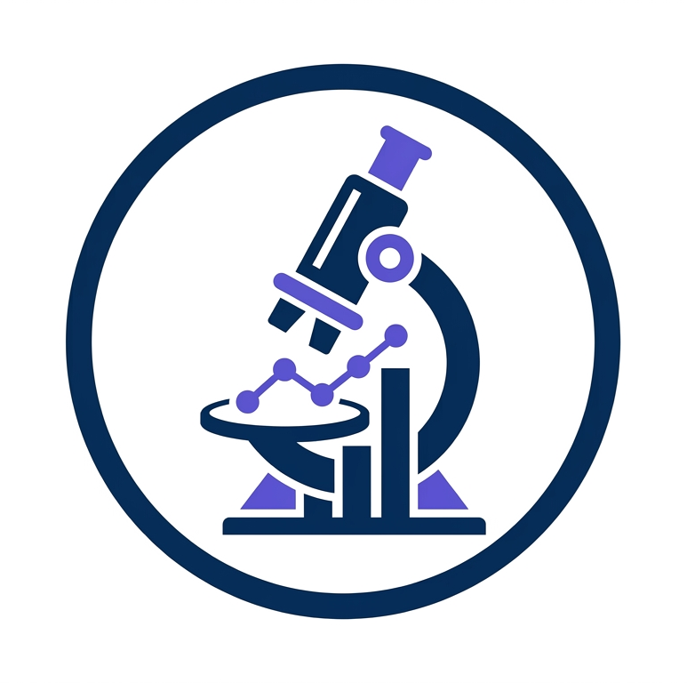
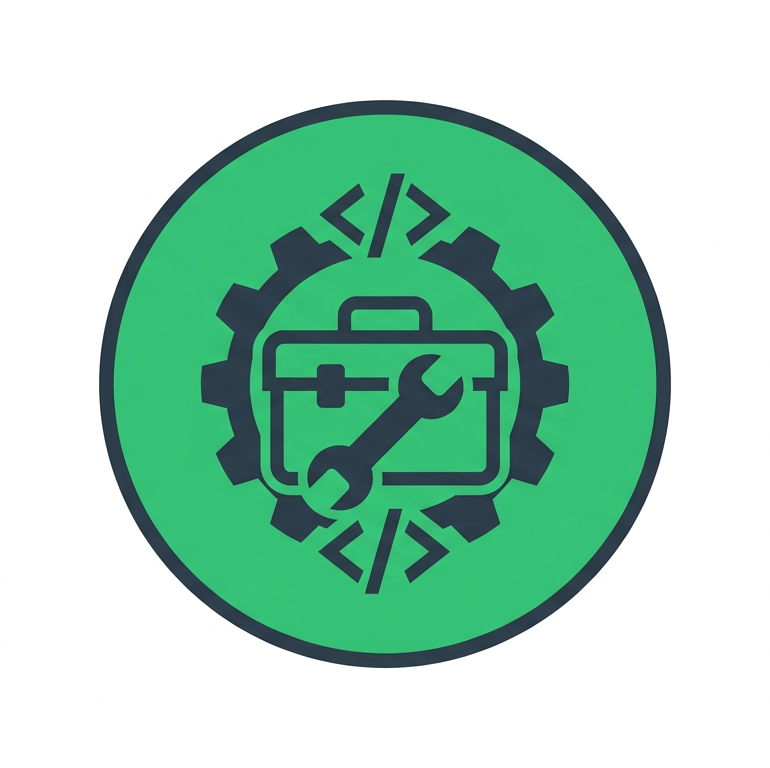
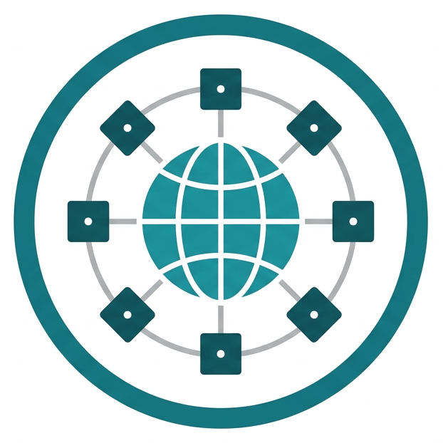
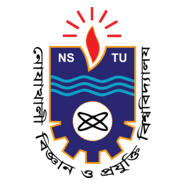

Professional Profile
2+ years of experience in building and maintaining full-stack applications with Laravel, Vue.js, and MySQL across product and service-oriented environments.
I am a software engineer with 2+ years of professional experience building scalable applications with PHP, Laravel, Vue.js, and MySQL. Alongside industry work, I hold an M.Sc. in CSTE and published research on malware detection and feature selection. I enjoy solving real-world software challenges and contributing to teaching and mentorship.
I am Md Ashikur Rahman, a Full Stack Software Engineer with industry and academic experience. My work covers scalable web development, software quality improvement, research-driven problem solving, and technical mentoring.

2+ years of experience in building and maintaining full-stack applications with Laravel, Vue.js, and MySQL across product and service-oriented environments.
M.Sc. and B.Sc. in Computer Science and Telecommunication Engineering from NSTU with research focus on malware detection, feature selection, and PCA-based analysis.

End-to-end web solution delivery, backend architecture support, frontend implementation, database optimization, and practical training for students and junior developers.
My work combines production-grade software engineering with an academic foundation in machine learning, analytics, and cybersecurity. I can support full-stack delivery, system improvement, and technical mentoring.

Build responsive and user-focused interfaces for modern web applications.

Develop secure and maintainable backend systems with clean architecture and APIs.

Design, optimize, and maintain relational databases for scalable applications.

Conduct and publish research with practical analytical and experimental workflows.
Deliver structured technical training with practical mentoring and evaluation.

Use a practical cross-domain toolkit for development, research, and delivery.
I have worked on real-world systems across education and enterprise use-cases, focusing on scalable backend architecture and reliable frontend delivery.
Jun 2024 – Present
Develop and maintain scalable web applications with PHP (Laravel), Vue.js, and Vuetify. Improve maintainability through modular architecture and close collaboration.
Aug 2023 – May 2024
Built and maintained Laravel applications, supported WordPress tasks, and worked with Zoho CRM data workflows to improve operational efficiency.
Jun 2024 – Mar 2025
Delivered hands-on training on HTML, CSS, Bootstrap, JavaScript, PHP, Laravel, and MySQL. Mentored batches of 25+ trainees with assignments, quizzes, and full-stack projects.
A portfolio of full-stack project delivery across university-scale admission systems, public-sector training platforms, and production web solutions for organizations and communities.
Online registration, results, payments, and notifications for multiple admission cycles.
Tech stack
Course-based training with surveys, quizzes, and certificates, integrated with police systems.
Tech stack

Organization and community sites built with deployment-focused, maintainable stacks.
Typical stack
Comprehensive academic profile including degree progression, thesis work, research focus, academic performance, and extracurricular contributions.

Peer-reviewed research publication reflecting my work in machine learning, feature selection, and cybersecurity-focused analytics.
Scholarships and recognitions from school to postgraduate level.
Download my professional profile based on your requirements. I keep two software engineering resume formats plus a separate academic CV.
Email: mdashikur567@gmail.com
Phone / WhatsApp: +8801712327242 | Chat on WhatsApp
Location: Dhaka, Bangladesh
Social: LinkedIn | GitHub | X | Facebook
Open to full-stack software roles, research collaboration, and teaching opportunities.